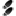

Node Status
This is the Devices-Status counterpart for nodes. It displays the node relevant information on the left, device and interface on the right with the connection in between.
- You'd usually land here coming from other modules like Nodes-List. Alternatively you can enter/paste
a MAC-address in any common format (grouped by - or . or : or plain HEX)
- If you need the MAC-address in a CLI window of a device, simply copy the appropriate format shown
 View syslog events containing this MAC address
View syslog events containing this MAC address
-  Visible for users in the helpdesk group to mark this node as stolen
- Allows administrators to delete the node
Clicking on the network icon of an IP address reveals a context menu:
- View syslog events coming from this IP
- Go to the Toolbox with this IP
- Send Wake on Lan packets
 Provision device using entry from System-Install
Provision device using entry from System-Install
 Identifies host and available services
Identifies host and available services
- Discover as an SNMP device
 NeDi Help
NeDi Help